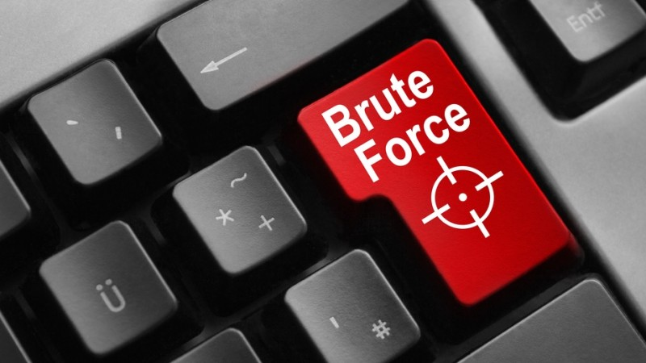
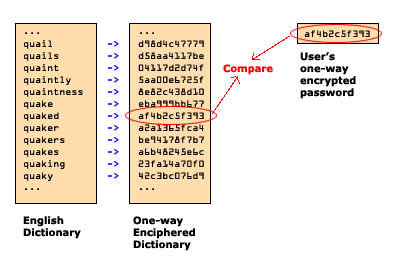

What are passwords?
A password is a hidden string of characters used to identify a user when logging in. It can vary in length and typically contains uppercase and lowercase letters, numbers, and signs. Usually, secure passwords have a minimum of 8 to 64 characters with case sensitivity and a mixture of letters, numbers and signs. This ensures that only the user with password is able to access the content.

Why are passwords important?
Passwords may be simple but are very effective when securing one’s information. Some of these information includes student and employee names, addresses, grades, payroll and other private information. It also stops viruses from infecting a computer since the hacker is unable to access the computer. This is why passwords are the main defense against hackers as it discourages less determined hackers as well as to buy time to catch them. Passwords are stored in a database not by clear text but in hashes. Hashing is the transformation of string characters to a unique value that represents the string.
Types of password attacks

Brute force attack: This hacking method uses trial and error to guess possible password combinations usually starting with the most common passwords. Brute-force attacks are considered to never fail but is time consuming if complex passwords are used.

Dictionary attack: This attack uses a script to cycle through the most common combination of words used in passwords. This affects many people with short and single words such as football or admin and variations of those words such as admin1.

Keylogger attack: A program, most typically in some form of malware is used to track an individual’s keystrokes. Strong passwords don’t have much effect to prevent hackers from stealing information since they know every keystroke you make and can use that information to log in.
Conclusion
Having a strong password is crucial to keeping your information safe and secure from hackers. It prevents information such as your bank account to be used for the hacker’s own purposes which can largely affect your life. Viruses aren’t able to enter your system since the password is the main defense against it.
.gif)